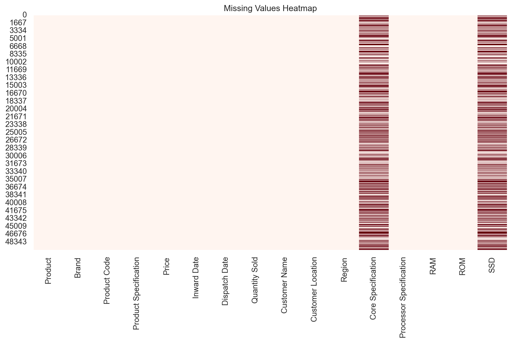

import pandas as pd
import seaborn as sns
import matplotlib.pyplot as pltMobile Data Exploration: User Behavior, Sales Report, & Specification Trend Analysis
Questions of Interest:
What are the top selling manufacturers for mobile devices in the World by total gross sales?
What are trends in specifications of mobile devices over the years and how do they affect sales?
What are some of the influences of mobile device usage in the United States and User Behavior?
Other Questions of Interest: (Unanswered)
- What phone sells the most per region, unit, and sales price-wise?
- What phone line leads in overall specs per these datasets?
- How does launch price and date affect sales amongst the top brands?
- Does weight have any influence in consumer trends or analysis?
- What launch price differences are present from these dataset?
- Are there any trends in screen size over the years?
- Do users with more apps installed spend more time on their phones?
- What are the behavior classes, which individuals are more susceptible to high screen usage?
- What ages are using the most screen on usage per day; is there a dominating phone model, os, and gender where this is more pronounced?
- If this were expanded, as well as the demographic more thoroughly represented, what could this dataset receive as a net change?
- From the second dataset, what are the optimal trends for devices that have been sold, manufactured and designed around the base core user experience? Are there indicators as to what influences a device to sell versus others that are moreso targeted as a niche device?
- Have user bases seen a decline over the years, expanded, or stabilized within the United States or World as a whole?
Import Dependencies
Upload Files
df_1 = pd.read_csv('mobile_sales_data.csv', encoding='latin1')
df_2 = pd.read_csv('Mobiles Dataset (2025).csv', encoding='latin1')
df_3 = pd.read_csv('top 120 best-selling mobile phones.csv', encoding='latin1')
df_4 = pd.read_csv('user_behavior_dataset.csv', encoding='latin1')Data Exploration of the (4) Datasets
# Mobile Sales Data Exploration #
# Feature importance, trends, and initial data analysis.
# 16 features / columns, zero nulls!
df_1.head()
df_1.describe()
df_1.info()
df_1.shape
df_1.isnull().sum()
df_1.isna().sum()
df_1.columns
df_1.dtypes
# Could Add $ to the Price Column...
df_1['Price'].describe()
df_1['Price'].value_counts()
df_1['Price'].unique().sum()
df_1['Price'].head()
df_1['Brand'].describe()
df_1['Brand'].value_counts()
df_1['Brand'].unique().sum()
df_1['Brand'].head()
# df_1['Model'].describe()
# df_1['Model'].value_counts()
# df_1['Model'].unique().sum()
# df_1['Model'].head()
df_1['RAM'].describe()
df_1['RAM'].value_counts()
df_1['RAM'].unique().sum()
df_1['RAM'].head()
df_1['Quantity Sold'].describe()
df_1['Quantity Sold'].value_counts()
df_1['Quantity Sold'].unique().sum()
df_1['Quantity Sold'].head()
# Where these reported in bulk or sold off to individual customers?
df_1['Customer Location'].describe()
df_1['Customer Location'].value_counts()
df_1['Customer Location'].unique().sum()
df_1['Customer Location'].head()
df_1['Dispatch Date'].describe()
df_1['Dispatch Date'].value_counts()
df_1['Dispatch Date'].unique().sum()
df_1['Dispatch Date'].head()
# What is the overall average, what trends are we seeing, what major companies are still 'ripping' off consumers?
df_1['SSD'].describe()
df_1['SSD'].value_counts()
df_1['SSD'].head()
df_1['SSD'].isna().sum()
df_1['SSD'].isnull().sum()
# Which region sells more phones overall, which types, sales prices, conversions, if 'manufactured costs' were included, what margins are present?
# What recommendations would be placed for a market research analysis on the best 'emerging marketspace' for an Android Distributor?
df_1['Region'].describe()
df_1['Region'].value_counts()
df_1['Region'].unique().sum()
df_1['Region'].head()
### What do these different columns display or relay in terms of initial first impressions and trends of mobile devices ###
# What influence has weight had on devices, is there an average or assumed weight that is preferred?<class 'pandas.core.frame.DataFrame'>
RangeIndex: 50000 entries, 0 to 49999
Data columns (total 16 columns):
# Column Non-Null Count Dtype
--- ------ -------------- -----
0 Product 50000 non-null object
1 Brand 50000 non-null object
2 Product Code 50000 non-null object
3 Product Specification 50000 non-null object
4 Price 50000 non-null int64
5 Inward Date 50000 non-null object
6 Dispatch Date 50000 non-null object
7 Quantity Sold 50000 non-null int64
8 Customer Name 50000 non-null object
9 Customer Location 50000 non-null object
10 Region 50000 non-null object
11 Core Specification 25017 non-null object
12 Processor Specification 50000 non-null object
13 RAM 50000 non-null object
14 ROM 50000 non-null object
15 SSD 25017 non-null object
dtypes: int64(2), object(14)
memory usage: 6.1+ MB0 Central
1 South
2 Central
3 South
4 East
Name: Region, dtype: objectdf_2['Company Name'].describe()
df_2['Company Name'].value_counts()
df_2['Company Name'].unique().sum()
df_2['Company Name'].head()
# I know the ASUS ROG Phone 7 has a 6,000 mAh Battery so this data might be invalidated.
df_2['Battery Capacity'].describe()
df_2['Battery Capacity'].value_counts()
df_2['Battery Capacity'].unique().sum()
df_2['Battery Capacity'].head()
# ALL RANGES
df_2['Launched Price (USA)'].describe()
df_2['Launched Price (USA)'].value_counts()
df_2['Launched Price (USA)'].unique().sum()
df_2['Launched Price (USA)'].head()
# 2011 - 2025
df_2['Launched Year'].describe()
df_2['Launched Year'].head()
# I know that there are many devices with 16gb or more of RAM, not sure if this is represented within the dataset.
df_2['RAM'].describe()
df_2['RAM'].value_counts()
df_2['RAM'].unique().sum()
df_2['RAM'].head()
# the same applies here with screensize, however, more data exploration is needed...
df_2['Screen Size'].describe()
# df_2['Screen Size'].value_counts()
# df_2['Screen Size'].unique().sum()
df_2['Screen Size'].head()
### Exchange rate function to assess what the differences in prices actually are between the different countries.
# exchange_rates = {
# 'USD': 1.0,
# 'INR': 0.012,
# 'GBP': 1.27,
# 'JPY': 0.0064
# }
# # Apply exchange rates
# def convert_to_usd(row):
# rate = exchange_rates.get(row['Currency'], 1.0)
# return round(row['Launch Price'] * rate, 2)
# # Add converted column
# df_2['Price in USD'] = df_2.apply(convert_to_usd, axis=1)0 6.1 inches
1 6.1 inches
2 6.1 inches
3 6.7 inches
4 6.7 inches
Name: Screen Size, dtype: object# Company Name
if 'Company Name' in df_2.columns:
print("\n Company Name Stats:\n", df_2['Company Name'].describe())
print(df_2['Company Name'].value_counts().head())
# Battery Capacity
if 'Battery Capacity' in df_2.columns:
print("\n Battery Capacity Stats:\n", df_2['Battery Capacity'].describe())
print(df_2['Battery Capacity'].value_counts().head())
# Launched Price (USA)
if 'Launched Price (USA)' in df_2.columns:
print("\n Launched Price Stats:\n", df_2['Launched Price (USA)'].describe())
print(df_2['Launched Price (USA)'].value_counts().head())
# RAM
if 'RAM' in df_2.columns:
print("\n RAM Stats:\n", df_2['RAM'].describe())
print(df_2['RAM'].value_counts().head())
# Screen Size
if 'Screen Size' in df_2.columns:
print("\n📱 Screen Size Stats:\n", df_2['Screen Size'].describe())
Company Name Stats:
count 930
unique 19
top Oppo
freq 129
Name: Company Name, dtype: object
Company Name
Oppo 129
Apple 97
Honor 91
Samsung 88
Vivo 86
Name: count, dtype: int64
Battery Capacity Stats:
count 930
unique 147
top 5,000mAh
freq 197
Name: Battery Capacity, dtype: object
Battery Capacity
5,000mAh 197
5000mAh 96
4,500mAh 46
4500mAh 38
5,200mAh 35
Name: count, dtype: int64
Launched Price Stats:
count 930
unique 107
top USD 499
freq 44
Name: Launched Price (USA), dtype: object
Launched Price (USA)
USD 499 44
USD 899 43
USD 299 43
USD 1,099 43
USD 399 42
Name: count, dtype: int64
RAM Stats:
count 930
unique 11
top 8GB
freq 308
Name: RAM, dtype: object
RAM
8GB 308
6GB 206
12GB 193
4GB 146
3GB 34
Name: count, dtype: int64
📱 Screen Size Stats:
count 930
unique 97
top 6.7 inches
freq 124
Name: Screen Size, dtype: object# Only 7 features within this entire dataset, however, showcases the reality of total units sold within a year as well as by manufacturer and model of the device.
df_3.describe()
df_3.info()
df_3['Rank'].head()
df_3['Rank'].describe()
#
df_3['Manufacturer'].info()
df_3['Manufacturer'].describe()
df_3['Units Sold (million )'].describe()
df_3['Units Sold (million )'].head()
df_3['Units Sold (million )'].tail()<class 'pandas.core.frame.DataFrame'>
RangeIndex: 120 entries, 0 to 119
Data columns (total 7 columns):
# Column Non-Null Count Dtype
--- ------ -------------- -----
0 Rank 120 non-null int64
1 Manufacturer 120 non-null object
2 Model 120 non-null object
3 Form Factor 120 non-null object
4 Smartphone? 120 non-null bool
5 Year 120 non-null int64
6 Units Sold (million ) 120 non-null float64
dtypes: bool(1), float64(1), int64(2), object(3)
memory usage: 5.9+ KB
<class 'pandas.core.series.Series'>
RangeIndex: 120 entries, 0 to 119
Series name: Manufacturer
Non-Null Count Dtype
-------------- -----
120 non-null object
dtypes: object(1)
memory usage: 1.1+ KB115 2.7
116 2.4
117 2.2
118 2.1
119 2.0
Name: Units Sold (million ), dtype: float64# This is a brief introspection into potential outcomes from cellphone and device usage, as well as, implications that it could pose against influencing the pro(s) and con(s) of disruptive behavior.
# 700 Participants
# Ages 18-59 years of age
# mean of 38 years old.
df_4.describe()
df_4.info()
df_4.columns
df_4['Device Model'].describe()
df_4['Device Model'].head()
df_4['Operating System'].describe()
df_4['Battery Drain (mAh/day)'].describe()
df_4['Age'].describe()
# df_4('Screen On Time (hours/day)').info()
df_4['User Behavior Class'].describe()
# df_4['Battery Drain (mAh/day)'].describe()
df_4['Age'].describe()<class 'pandas.core.frame.DataFrame'>
RangeIndex: 700 entries, 0 to 699
Data columns (total 11 columns):
# Column Non-Null Count Dtype
--- ------ -------------- -----
0 User ID 700 non-null int64
1 Device Model 700 non-null object
2 Operating System 700 non-null object
3 App Usage Time (min/day) 700 non-null int64
4 Screen On Time (hours/day) 700 non-null float64
5 Battery Drain (mAh/day) 700 non-null int64
6 Number of Apps Installed 700 non-null int64
7 Data Usage (MB/day) 700 non-null int64
8 Age 700 non-null int64
9 Gender 700 non-null object
10 User Behavior Class 700 non-null int64
dtypes: float64(1), int64(7), object(3)
memory usage: 60.3+ KBcount 700.000000
mean 38.482857
std 12.012916
min 18.000000
25% 28.000000
50% 38.000000
75% 49.000000
max 59.000000
Name: Age, dtype: float64Plots for Visualizing the Datasets & Building Out Analysis
Question #1 What are the top selling manufacturers for mobile devices in the World by total gross sales?
It is critical to highlight that after using these datasets extensively, there are notable gaps in recorded and compiled data-points, which is expressed and seen within several of the graphs, resulting in an assessment of the findings being quite restrictive. It does however highlight the impact of total device sales made overtime, demonstrating the disruptive influence of smartphones and global manufacturers overtime intently launching, and distributing devices to as many ‘hands’ as possibly accessible. It would be unique to explore some data enrichment techniques and expand this with more datasets to ensure that it properly represents any future assertions that could be made. With that in mind, here are a few critical key points and charts for showcasing the influence of smartphone sales by the ‘best selling’ manufacturers across the world.
# Launch price of devices measured over the course of (years) to showcase the differences that have been made within the industry.*args
df_2['Launched Price (USA)'] = df_2['Launched Price (USA)'].replace('[\$,]', '', regex=True)
df_2['Launched Price (USA)'] = pd.to_numeric(df_2['Launched Price (USA)'], errors='coerce')
price_trend = df_2.groupby(['Launched Year', 'Company Name'])['Launched Price (USA)'].mean().reset_index()
top_brands = df_2['Company Name'].value_counts().head(5).index
filtered_price_trend = price_trend[price_trend['Company Name'].isin(top_brands)]
plt.figure(figsize=(14, 7))
sns.lineplot(data=filtered_price_trend, x='Launched Year', y='Launched Price (USA)', hue='Company Name', marker='o')
plt.title("Price Trends of Top 5 Phone Brands Over Time")
plt.xlabel("Year")
plt.ylabel("Avg Launch Price (USD)")
plt.grid(True)
plt.tight_layout()
plt.show()
# This dataset is missing data-points, which is unfortunate for the purposes of our intents to analyze the extracted, compiled, and utilized data-points.df_3['Year'] = pd.to_numeric(df_3['Year'], errors='coerce')
top_sales_year = df_3.groupby(['Year', 'Manufacturer', 'Model'])['Units Sold (million )'].sum().reset_index()
top_5_per_year = top_sales_year.groupby('Year').apply(lambda x: x.nlargest(5, 'Units Sold (million )')).reset_index(drop=True)
plt.figure(figsize=(14, 6))
sns.barplot(data=top_5_per_year, x='Year', y='Units Sold (million )', hue='Manufacturer')
plt.title("Top Selling Phones by Year and Manufacturer")
plt.xlabel("Year")
plt.ylabel("Units Sold (Million)")
plt.grid(True)
plt.tight_layout()
plt.show()
# Need to showcase this over the time of year, to indicate what peak times phones were being sold, how many, and what potentially caused these spikes?sns.set(style="whitegrid")
plt.figure(figsize=(22, 10))
sns.barplot(data=df_3, x='Manufacturer', y='Units Sold (million )', palette='Set2')
plt.title("Total Units Sold by Manufacturer (2025)")
plt.xlabel("Manufacturer")
plt.ylabel("Units Sold (Million)")
plt.tight_layout()
plt.show()def clean_numeric(col, unit=None):
cleaned_series = df_2[col].astype(str).str.replace(r'[^\d.]', '', regex=True)
cleaned_series = cleaned_series.apply(lambda x: '.'.join(x.split('.')[:2]) if '.' in x else x)
cleaned_series = cleaned_series.replace('', float('nan'))
return pd.to_numeric(cleaned_series, errors='coerce').astype(float)
df_2['Mobile Weight (g)'] = clean_numeric('Mobile Weight')
df_2['RAM (GB)'] = clean_numeric('RAM')
df_2['Front Camera (MP)'] = clean_numeric('Front Camera')
df_2['Back Camera (MP)'] = clean_numeric('Back Camera')
df_2['Battery (mAh)'] = clean_numeric('Battery Capacity')
df_2['Screen Size (inch)'] = clean_numeric('Screen Size')
for col in ['Launched Price (Pakistan)', 'Launched Price (India)', 'Launched Price (China)',
'Launched Price (USA)', 'Launched Price (Dubai)']:
df_2[col] = clean_numeric(col)
# this doesn't account for exchange rates which is something that I would want to consider in the future.
melted_prices = df_2.melt(
id_vars=['Model Name', 'Company Name'],
value_vars=[
'Launched Price (Pakistan)', 'Launched Price (India)',
'Launched Price (China)', 'Launched Price (USA)', 'Launched Price (Dubai)'
],
var_name='Country',
value_name='Price'
)
plt.figure(figsize=(12, 6))
sns.boxplot(data=melted_prices, x='Country', y='Price')
plt.title("Launched Price Comparison by Country")
plt.xticks(rotation=45)
plt.show()
Question #2: What are trends in specifications of mobile devices over the years and how do they affect sales?
Device ‘Specs’ have been on a collaterol rise for the past 15+ years, with nearly every succeeding year boasting numerous upgrades for ‘top-tier devices’ released by manufacturers across the globe. While this benefits the consumer immensely during this ‘golden age of industry’, there are some pitfalls as devices in general have increasingly become more expensive, and at what cost? Included within this report as some charts to showcase some of the noteworthy ‘spec’ increments and the limited assessment from the datapoints derived from a few of the datasets.
df_2['RAM_GB'] = df_2['RAM'].str.replace('GB', '', regex=False).str.strip()
df_2['RAM_GB'] = pd.to_numeric(df_2['RAM_GB'], errors='coerce')
df_2['Screen Size'] = df_2['Screen Size'].astype(str).str.replace(r'[^\d\.]', '', regex=True)
df_2['Screen Size'] = pd.to_numeric(df_2['Screen Size'], errors='coerce')
df_2['Battery Capacity'] = df_2['Battery Capacity'].astype(str).str.replace(r'[^\d\.]', '', regex=True)
df_2['Battery Capacity'] = pd.to_numeric(df_2['Battery Capacity'], errors='coerce')
summary_by_year = df_2.groupby('Launched Year').agg(
avg_ram_gb = ('RAM_GB', 'mean'),
max_ram_gb = ('RAM_GB', 'max'),
min_ram_gb = ('RAM_GB', 'min'),
avg_battery = ('Battery Capacity', 'mean'),
max_battery = ('Battery Capacity', 'max'),
min_battery = ('Battery Capacity', 'min'),
num_devices = ('Model Name', 'nunique')
).reset_index()
summary_by_year.round(2)| Launched Year | avg_ram_gb | max_ram_gb | min_ram_gb | avg_battery | max_battery | min_battery | num_devices | |
|---|---|---|---|---|---|---|---|---|
| 0 | 2014 | 1.50 | 2.0 | 1.0 | 2150.00 | 2300 | 2000 | 2 |
| 1 | 2016 | 3.40 | 6.0 | 1.5 | 3920.00 | 5000 | 2600 | 5 |
| 2 | 2017 | 4.44 | 8.0 | 3.0 | 3220.78 | 4000 | 2716 | 9 |
| 3 | 2018 | 4.38 | 10.0 | 2.0 | 3177.95 | 4030 | 2658 | 21 |
| 4 | 2019 | 6.28 | 12.0 | 3.0 | 3950.72 | 5124 | 2800 | 46 |
| 5 | 2020 | 6.42 | 12.0 | 2.0 | 4958.59 | 10307 | 2227 | 98 |
| 6 | 2021 | 7.06 | 12.0 | 2.0 | 4616.30 | 7250 | 2438 | 103 |
| 7 | 2022 | 7.58 | 16.0 | 2.0 | 4992.62 | 11200 | 3200 | 146 |
| 8 | 2023 | 8.12 | 16.0 | 2.0 | 5297.85 | 11200 | 3200 | 181 |
| 9 | 2024 | 9.08 | 16.0 | 3.0 | 5416.70 | 11000 | 3500 | 290 |
| 10 | 2025 | 9.00 | 12.0 | 6.0 | 5716.67 | 6000 | 5000 | 12 |
summary_by_year['ram_diff'] = summary_by_year['max_ram_gb'] - summary_by_year['min_ram_gb']
plt.figure(figsize=(10, 5))
sns.lineplot(data=summary_by_year, x='Launched Year', y='ram_diff', marker='o', color='purple')
plt.title("Difference in RAM (GB) by Launch Year")
plt.xlabel("Launch Year")
plt.ylabel("Max - Min RAM (GB)")
plt.grid(True)
plt.tight_layout()
plt.show()
# The reason for the drop in devices with RAM capacity within the year for 2025 is due to the target year not being fully populated as this is a first quarter analysis with extremelly limited data that was provided within that dataset.plt.figure(figsize=(10, 5))
sns.lineplot(data=summary_by_year, x='Launched Year', y='avg_battery', marker='o', color='green')
plt.title("Average Battery Capacity Over the Years")
plt.ylabel("Battery (mAh)")
plt.grid(True)
plt.show()Question #3: What ages are using the most screen on usage per day; is there a dominating phone model, os, and gender where this is more pronounced?
It is imperative to denote that there are 700 participants within this study or dataset ranging from the age of 18-59 years old, with 38 years of age being the mean, however this is not represented of a target demographic (ie, country, state, city, time period, etc) in which substanciated claims could be asserted. With that in mind, Males between the ages of 18-25 & 36-50 were reported to have more device usage time (screen wise & by population) whereas females in the ages 26-35 were not only the most represented population wise but some female participants reported total max screen time at (12 hours a day). It is assumed that this study was conducted during 2021 due to the Top 5 Phones that were released and utilized within this study, with that in mind, most users reported spending 4-5 hours on average on their device, with 47 year olds holding the baton for the most hours spent a day at 7.3 hours recorded as the average.
It would be imperative to expand the target demographic threshold as well as diversify the dataset in order to populate a proper basis for concrete findings and conclusions, as at this time, the credibility of the study is in question due to these aforementioned factors.
# App Usage by Behavior Class ()
sns.boxplot(data=df_4, x='User Behavior Class', y='App Usage Time (min/day)', palette='Set3')
plt.title("App Usage Time by User Behavior Class")
plt.show()
# Screen time by OS (IOS vs Android)
sns.barplot(data=df_4, x='Operating System', y='Screen On Time (hours/day)', ci=None)
plt.title("Average Screen On Time by Operating System")
plt.show()# Ensures that age groups are properly assessed.
age_screen_time = df_4.groupby('Age')['Screen On Time (hours/day)'].mean().reset_index()
# Average screen time per device or OS (IOS vs Android)
model_usage = df_4.groupby('Device Model')['Screen On Time (hours/day)'].mean().sort_values(ascending=False).head(5)
os_usage = df_4.groupby('Operating System')['Screen On Time (hours/day)'].mean()
gender_usage = df_4.groupby('Gender')['Screen On Time (hours/day)'].mean()
# Screen On Time by Age
sns.lineplot(data=age_screen_time, x='Age', y='Screen On Time (hours/day)', marker='o')
plt.title("Screen Time by Age")
plt.show()
# No observed difference in screentime by gender, so that metric was excluded in the assessment.# Age Groups were binned, so that they are easier to see, identify and analyze.
df_4['Age Group'] = pd.cut(df_4['Age'], bins=[0, 18, 25, 35, 50, 70], labels=['<18', '18-25', '26-35', '36-50', '50+'])
# Age Group versus Screen Time
plt.figure(figsize=(10, 6))
sns.boxplot(data=df_4, x='Age Group', y='Screen On Time (hours/day)', hue='Gender')
plt.title("Screen On Time by Age Group and Gender")
plt.show()# Data Usage per user by age categories once more!
sns.boxplot(data=df_4, x='Age Group', y='Data Usage (MB/day)', palette='coolwarm')
plt.title("Daily Mobile Data Usage by Age Group")
plt.ylabel("Data Usage (MB/day)")
plt.show()top_models = df_4.groupby('Device Model')['Screen On Time (hours/day)'].mean().sort_values(ascending=False).head(5)
top_models.plot(kind='bar', color='purple')
plt.title("Top 5 Device Models by Average Screen On Time")
plt.ylabel("Screen Time (hrs/day)")
plt.xticks(rotation=45)
plt.tight_layout()
plt.show()usage_corr = df_4[['App Usage Time (min/day)', 'Screen On Time (hours/day)', 'Battery Drain (mAh/day)', 'Number of Apps Installed', 'Data Usage (MB/day)']].corr()
sns.heatmap(usage_corr, annot=True, cmap='coolwarm')
plt.title("Correlation Between Mobile Usage Metrics")
plt.show()Other Charts & Data Analysis
These were apart of the analysis and data exploration phase, many of these were excluded due to complexity, lack of assertive data points, or they were conclusive enough to display in the results.
# Data Analysis & Chart Exploration #
# Chart & Data Exploration phase of df_1
# Sales and Mobile Device Dataframe
import pandas as pd
import matplotlib.pyplot as plt
import seaborn as sns
# To check and see if there are any outliers or null values
plt.figure(figsize=(12, 6))
sns.heatmap(df_1.isnull(), cbar=False, cmap='Reds')
plt.title("Missing Values Heatmap")
plt.show()
# Assesses the price(s) of devices
plt.figure(figsize=(10, 5))
sns.histplot(df_1['Price'], kde=True, bins=50)
plt.title("Distribution of Product Price")
plt.xlabel("Price")
plt.ylabel("Frequency")
plt.show()
## Top 10 Overview of Phones ##
plt.figure(figsize=(12, 5))
top_products = df_1['Product'].value_counts().nlargest(10)
sns.barplot(x=top_products.index, y=top_products.values)
plt.title("Top 10 Most Frequent Products")
plt.ylabel("Count")
plt.xticks(rotation=45)
plt.show()
# Price versus Quantity of Phones Sold Overall #
plt.figure(figsize=(10, 6))
sns.scatterplot(data=df_1, x='Price', y='Quantity Sold', hue='Brand', alpha=0.7)
plt.title("Price vs Quantity Sold by Brand")
plt.xlabel("Price")
plt.ylabel("Quantity Sold")
plt.legend(bbox_to_anchor=(1.05, 1), loc='upper left')
plt.show()
# Monthly Sales Price Trend #
df_1['Dispatch Date'] = pd.to_datetime(df_1['Dispatch Date'])
df_1['Month'] = df_1['Dispatch Date'].dt.to_period('M')
monthly_sales = df_1.groupby('Month')['Quantity Sold'].sum()
plt.figure(figsize=(14, 6))
monthly_sales.plot(kind='line', marker='o')
plt.title("Monthly Quantity Sold Over Time")
plt.xlabel("Month")
plt.ylabel("Quantity Sold")
plt.xticks(rotation=45)
plt.grid(True)
plt.show()
## Correlation Plot ##
numeric_cols = df_1.select_dtypes(include=['int64', 'float64']).columns
plt.figure(figsize=(8, 6))
sns.heatmap(df_1[numeric_cols].corr(), annot=True, cmap='coolwarm', fmt=".2f")
plt.title("Correlation Heatmap")
plt.show()
# Company Name
if 'Company Name' in df_2.columns:
print("\n Company Name Stats:\n", df_2['Company Name'].describe())
print(df_2['Company Name'].value_counts().head())
# Battery Capacity
if 'Battery Capacity' in df_2.columns:
print("\n Battery Capacity Stats:\n", df_2['Battery Capacity'].describe())
print(df_2['Battery Capacity'].value_counts().head())
# Launched Price (USA)
if 'Launched Price (USA)' in df_2.columns:
print("\n Launched Price Stats:\n", df_2['Launched Price (USA)'].describe())
print(df_2['Launched Price (USA)'].value_counts().head())
# RAM
if 'RAM' in df_2.columns:
print("\n RAM Stats:\n", df_2['RAM'].describe())
print(df_2['RAM'].value_counts().head())
# Screen Size
if 'Screen Size' in df_2.columns:
print("\n📱 Screen Size Stats:\n", df_2['Screen Size'].describe())
Company Name Stats:
count 930
unique 19
top Oppo
freq 129
Name: Company Name, dtype: object
Company Name
Oppo 129
Apple 97
Honor 91
Samsung 88
Vivo 86
Name: count, dtype: int64
Battery Capacity Stats:
count 930.000000
mean 5026.163441
std 1355.548264
min 2000.000000
25% 4402.500000
50% 5000.000000
75% 5091.250000
max 11200.000000
Name: Battery Capacity, dtype: float64
Battery Capacity
5000 293
4500 84
4000 36
6000 35
5200 35
Name: count, dtype: int64
Launched Price Stats:
count 0.0
mean NaN
std NaN
min NaN
25% NaN
50% NaN
75% NaN
max NaN
Name: Launched Price (USA), dtype: float64
Series([], Name: count, dtype: int64)
RAM Stats:
count 930
unique 11
top 8GB
freq 308
Name: RAM, dtype: object
RAM
8GB 308
6GB 206
12GB 193
4GB 146
3GB 34
Name: count, dtype: int64
📱 Screen Size Stats:
count 926.000000
mean 7.085238
std 1.536834
min 5.000000
25% 6.500000
50% 6.670000
75% 6.780000
max 14.600000
Name: Screen Size, dtype: float64# Data Exploration Phase
### DATA EXPLORATION PHASE FOR PHONES made within 2011 - 2025
## PENDING MORE UPDATES to ensure that data is represented well.
# Function to covert the data to clean strings as it is stored in object(s)...
def clean_numeric(col, unit=None):
# Remove non-digit and non-dot characters, then handle multiple dots by keeping only the first one
cleaned_series = df_2[col].astype(str).str.replace(r'[^\d.]', '', regex=True)
cleaned_series = cleaned_series.apply(lambda x: '.'.join(x.split('.')[:2]) if '.' in x else x)
cleaned_series = cleaned_series.replace('', float('nan')) # Convert empty strings to NaN
return pd.to_numeric(cleaned_series, errors='coerce').astype(float) # Use pd.to_numeric with errors='coerce'
df_2['Mobile Weight (g)'] = clean_numeric('Mobile Weight')
df_2['RAM (GB)'] = clean_numeric('RAM')
df_2['Front Camera (MP)'] = clean_numeric('Front Camera')
df_2['Back Camera (MP)'] = clean_numeric('Back Camera')
df_2['Battery (mAh)'] = clean_numeric('Battery Capacity')
df_2['Screen Size (inch)'] = clean_numeric('Screen Size')
for col in ['Launched Price (Pakistan)', 'Launched Price (India)', 'Launched Price (China)',
'Launched Price (USA)', 'Launched Price (Dubai)']:
df_2[col] = clean_numeric(col)
# OPPO leads the pack in #1, followed by APPLE, and Honor shortly after it... Samsung is in 4th...
plt.figure(figsize=(10, 5))
sns.countplot(data=df_2, y='Company Name', order=df_2['Company Name'].value_counts().head(10).index)
plt.title("Top 10 Mobile Companies by Launch Count")
plt.xlabel("Number of Models Launched")
plt.ylabel("Company")
plt.show()
# Showcases the RAM VS Battery Capacity of devices with a distribution curve to analysis generally where outliers are present and where industry wide
# Specs have more or less stayed the same...
fig, ax = plt.subplots(1, 2, figsize=(14, 5))
sns.histplot(df_2['RAM (GB)'], bins=15, kde=True, ax=ax[0])
ax[0].set_title("RAM Distribution")
sns.histplot(df_2['Battery (mAh)'], bins=20, kde=True, ax=ax[1], color="orange")
ax[1].set_title("Battery Capacity Distribution")
plt.tight_layout()
plt.show()
## Does a screen that is bigger or smaller translate to an increased price tag? ...
# Well we have a general assumption based off of market trends and practices present in 2025.
plt.figure(figsize=(10, 6))
sns.scatterplot(data=df_2, x='Screen Size (inch)', y='Launched Price (USA)', hue='Company Name', alpha=0.7)
plt.title("Screen Size vs USA Price")
plt.xlabel("Screen Size (inch)")
plt.ylabel("Price in USD")
plt.legend(bbox_to_anchor=(1.05, 1), loc='upper left')
plt.show()
### Price Comparisons Across Countries ###
melted_prices = df_2.melt(
id_vars=['Model Name', 'Company Name'],
value_vars=[
'Launched Price (Pakistan)', 'Launched Price (India)',
'Launched Price (China)', 'Launched Price (USA)', 'Launched Price (Dubai)'
],
var_name='Country',
value_name='Price'
)
plt.figure(figsize=(12, 6))
sns.boxplot(data=melted_prices, x='Country', y='Price')
plt.title("Launched Price Comparison by Country")
plt.xticks(rotation=45)
plt.show()# Data Exploration and Charts that were created to analyze the dataset in conjunction with a few plugins within my IDE of choice, Visual Code Studio.
# Analysis into App Usage and Time Spent in Minutes Per Day
# What are the groupings, how many people were within this study, and what distinct features are present here?
plt.figure(figsize=(10, 5))
sns.histplot(df_4['App Usage Time (min/day)'], bins=30, kde=True, color='skyblue')
plt.title("Distribution of App Usage Time (min/day)")
plt.xlabel("Minutes per Day")
plt.ylabel("Frequency")
plt.grid(True)
plt.show()
# User Behavior (reported) versus Screen On Time per Device
plt.figure(figsize=(10, 5))
sns.scatterplot(data=df_4, x='App Usage Time (min/day)', y='Battery Drain (mAh/day)', hue='Operating System')
plt.title("Battery Drain vs. App Usage Time")
plt.xlabel("App Usage Time (min/day)")
plt.ylabel("Battery Drain (mAh/day)")
plt.grid(True)
plt.show()
## Gender Versus Screen on Time Usage (per device)
plt.figure(figsize=(12, 5))
# App Usage
plt.subplot(1, 2, 1)
sns.boxplot(x='Gender', y='App Usage Time (min/day)', data=df_4, palette='pastel')
plt.title("App Usage Time by Gender")
# Screen On Time
plt.subplot(1, 2, 2)
sns.boxplot(x='Gender', y='Screen On Time (hours/day)', data=df_4, palette='muted')
plt.title("Screen On Time by Gender")
plt.tight_layout()
plt.show()
# Feature Importance HeatMap
plt.figure(figsize=(10, 6))
numerical_cols = df_4.select_dtypes(include=['int64', 'float64']).columns
sns.heatmap(df_4[numerical_cols].corr(), annot=True, cmap='coolwarm')
plt.title("Correlation Heatmap of Numerical Features")
plt.show()
# Data Usage Versus the Number of Installed Apps on a device
# NEED to explain the behavior categories and what this scatterplot grouping showcases.
plt.figure(figsize=(10, 5))
sns.scatterplot(data=df_4, x='Number of Apps Installed', y='Data Usage (MB/day)', hue='User Behavior Class', palette='tab10')
plt.title("Data Usage vs. Number of Apps Installed")
plt.xlabel("Number of Apps")
plt.ylabel("Data Usage (MB/day)")
plt.grid(True)
plt.show()
# Phone Models that are the most popular within this target demographic and dataset...
plt.figure(figsize=(10, 5))
top_devices = df_4['Device Model'].value_counts().nlargest(10)
sns.barplot(x=top_devices.values, y=top_devices.index, palette='viridis')
plt.title("Top 10 Most Used Device Models")
plt.xlabel("Number of Users")
plt.ylabel("Device Model")
plt.show()
# Age Distribution Versus the Behavior Classes
# plt.figure(figsize=(10, 5))
# sns.scatterplot(x='User Behavior Class', y='Age', data=df_4, palette='Accent')
# plt.title("Age Distribution Across User Behavior Classes")
# plt.xlabel("User Behavior Class")
# plt.ylabel("Age")
# plt.show()
# Battery Drainage by OS as on-device
# plt.figure(figsize=(10, 5))
# sns.barplot(data=df_4, x='Operating System', y='Battery Drain (mAh/day)', estimator='mean', ci='sd', palette='deep')
# plt.title("Average Battery Drain by Operating System")
# plt.ylabel("Avg Battery Drain (mAh/day)")
# plt.xlabel("Operating System")
# plt.show()
plt.figure(figsize=(10, 5))
sns.scatterplot(data=df_4, x='Age', y='App Usage Time (min/day)', hue='Gender', alpha=0.7)
plt.title("App Usage by Age and Gender")
plt.xlabel("Age")
plt.ylabel("App Usage Time (min/day)")
plt.grid(True)
plt.show()